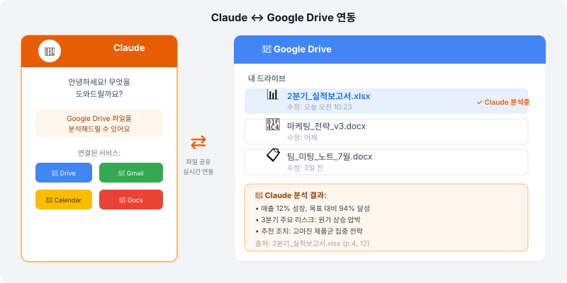
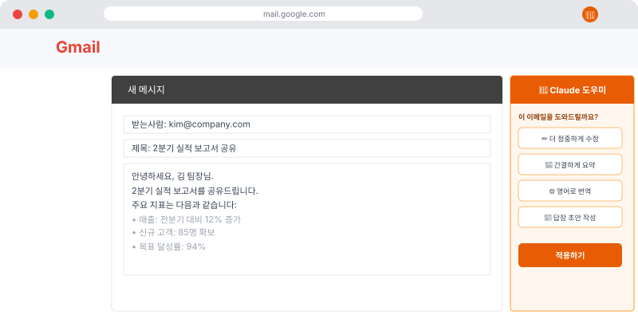

🔗 "Claude가 내 파일을 알면 훨씬 편할 텐데…"
Claude에 업무 내용을 설명할 때마다 배경을 새로 입력하는 게 번거롭지 않으셨나요? 클로드 코워크(Claude Cowork)는 Claude가 내 Google Drive, Gmail, Calendar 등에 직접 접근해서 맥락을 파악하고 더 정확한 도움을 주는 기능이에요.
마치 새 직원이 처음 왔을 때 전달해야 할 회사 자료를 모두 보여주는 것과 같아요. 한 번 설정해두면 매번 설명할 필요가 없어요.
💡 코워크의 핵심 가치: Claude가 내 업무 맥락을 알면 더 구체적이고 실용적인 도움을 줍니다. "우리 팀 일정에 맞춰서 계획을 짜줘"가 실제로 가능해져요.
📁 Google Drive 연결하기
Google Drive를 연결하면 Claude가 내 문서를 참조해서 답변할 수 있어요.
연결 방법
- Claude 프로젝트 설정에서 "Integrations" 탭 열기
- "Google Drive" 선택 → Google 계정으로 인증
- Claude가 접근할 폴더 범위 선택 (전체 또는 특정 폴더)
- 연결 완료 후 "이 드라이브에서 [파일명] 찾아줘"처럼 요청

Google Drive 연결 후 활용 예시
- "작년 4분기 성과 보고서를 찾아서 핵심 지표만 요약해줘"
- "지난달에 작성한 기획서를 바탕으로 이번 달 버전 업데이트해줘"
- "이 프로젝트 폴더에 있는 문서들을 보고 현재 진행 상황을 정리해줘"
📧 Gmail 연결하기
Gmail을 연결하면 이메일 맥락을 이해한 답변을 받을 수 있어요.
연결 방법
- Claude 프로젝트 Integrations에서 "Gmail" 선택
- Google 계정 인증 → 접근 권한 승인
- 이제 이메일 스레드를 Claude에게 분석 요청 가능
Gmail 연결 후 활용 예시
- "이 이메일 스레드를 요약하고 내가 해야 할 액션이 뭔지 알려줘"
- "이 고객 이메일에 답장을 써줘. 우리가 나눈 대화 맥락을 참고해서"
- "이번 주 받은 이메일 중 중요한 것과 답장 필요한 것을 정리해줘"

⚠️ 보안 주의사항: Google 계정 연동 시 Claude가 이메일 내용을 읽을 수 있게 됩니다. 회사 정책에 따라 업무 이메일 연동 전 IT팀 또는 보안팀과 확인하세요. 개인 계정은 자유롭게 활용하셔도 돼요.
📅 Google Calendar 연결하기
Calendar를 연결하면 일정을 고려한 업무 계획을 세울 수 있어요.
Calendar 연결 후 활용 예시
- "이번 주 내 일정을 보고, 보고서 작성 시간을 어디에 넣으면 좋을지 제안해줘"
- "다음 주 팀 미팅이 있는데, 미팅 전에 준비해야 할 것들을 일정에 맞게 계획해줘"
- "이번 달 반복되는 회의들을 정리하고 효율화 방안을 제안해줘"
🔄 연결 서비스 통합 활용하기
여러 서비스를 동시에 활용하면 훨씬 강력해져요.
📋 실전 시나리오: 월요일 아침 업무 준비
"오늘 월요일이야. Gmail, Drive, Calendar를 모두 확인해서:
- 이번 주 중요한 일정과 마감 정리
- 주말 동안 온 중요 이메일 요약
- 오늘 처리해야 할 우선순위 업무 3가지 제안"
→ Claude가 실제 일정과 이메일을 보고 맞춤 업무 계획을 세워줘요.
💡 코워크 최대 활용법: 처음에는 하나씩 연결해보세요. Drive 먼저 연결하고 익숙해지면 Gmail, 그다음 Calendar 순서로 차근차근 확장하는 것을 추천해요.